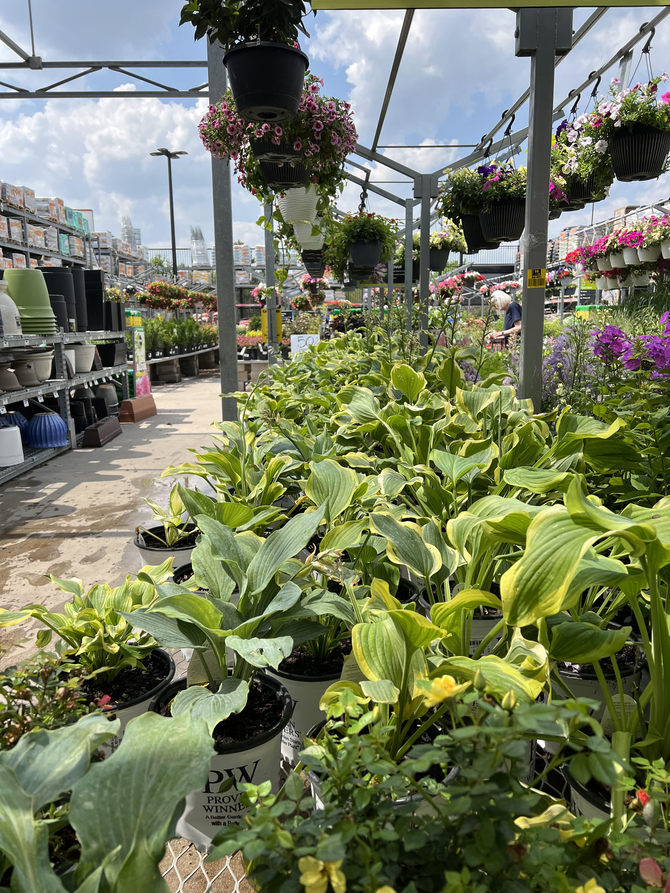
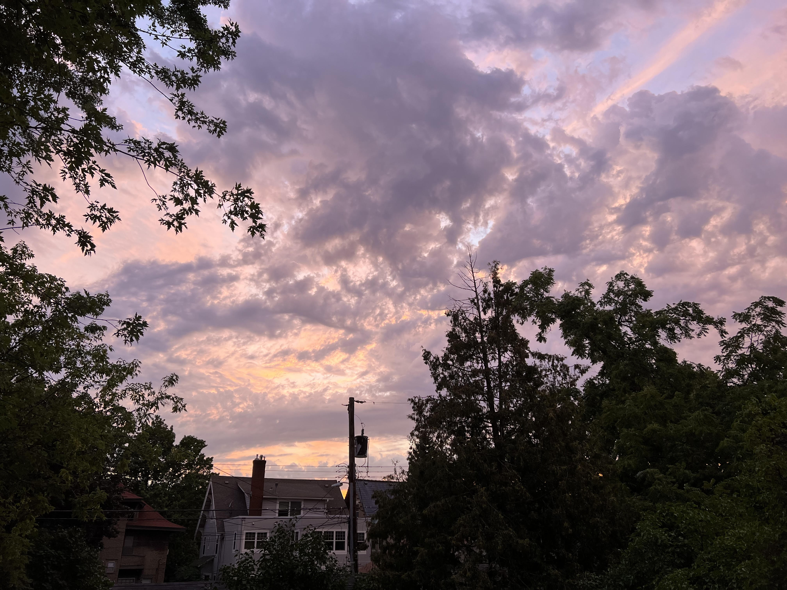

I'm a current Sophomore at the University of Minnesota - Twin Cities. I'm sure you can guess, but I am a computer science student, hoping to graduate with some sort of emphasis on web development.
Aside from being a full time CS student, I also TA an introductory computer science course here at the U
Outside of school, some of my hobbies include playing the piano and lifting weights (and caring for plants of course)
I only have a few plants, but it's enough to the point where I need to make a website solely for them
I used to work at a garden center over the summer, which I like to attribute my liking of plants to (a picture of my garden center can be seen on the right)


Aside from plants, I'm also just a big fan of nature in general (especially pictures of the sky)